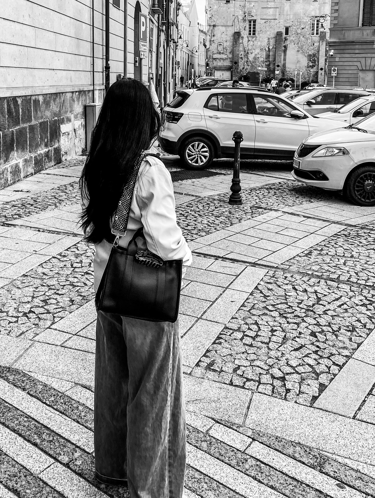

About
Creo que el arte bien hecho no tiene que ver con el perfeccionismo. Tiene que ver con la atención. Atención al detalle, a la intención detrás de una pieza, a lo que transmite y, sobre todo, a la conexión que existe entre el artista y aquello que está creando.
Para mí, la libertad creativa se convierte en un juego cuando existe la posibilidad de explorar, experimentar y crear sin perder de vista el objetivo. Cuando la intención creativa logra encontrarse con la expresión del artista, el proceso deja de ser solamente trabajo y se convierte en una colaboración.
Y es ahí donde entra la empatía. Un trabajo bien hecho refleja más que técnica. Refleja una buena conexión entre las personas involucradas, las ideas detrás de la pieza y las emociones que se quieren transmitir. Cuando existe entendimiento, confianza y libertad dentro del proceso creativo, el resultado puede hablar por sí mismo.
También creo que el color tiene una forma particular de relacionarse con nosotros. El azul, por ejemplo, puede transmitir tranquilidad, profundidad y calma. Pero su significado nunca está completamente definido. Se desarrolla a través del artista, de la pieza y de quien la observa. El color puede cambiar dependiendo de la historia que existe detrás de él.
Lo mismo sucede con la tranquilidad que puede transmitir una pieza. Para mí, esa sensación comienza desde una base psicológica. Antes de que una obra pueda transmitir calma, belleza o admiración, existe una intención detrás de ella. Hay algo que se quiere decir, incluso cuando no se utilizan palabras.
Y quizá ahí es donde mi manera de entender el arte se conecta con algo más profundo. Creo que somos la creación perfecta de Dios. Existe una conexión directa entre Él y nosotros; somos, de alguna manera, lo más cercano a Dios y al mismo tiempo podemos sentirnos increíblemente lejos de Él. La creación nos recuerda que existe algo más grande detrás de aquello que podemos ver, y el arte puede convertirse en una forma de explorar, expresar y compartir una pequeña parte de esa conexión.
Por eso no creo que el arte tenga que buscar llamar la atención. El arte no busca llamar la atención. La sostiene. Ese es el punto de partida de mi trabajo.
Este portafolio reúne cuatro piezas que buscan explorar no solamente cómo se ve una obra, sino todo aquello que existe detrás de ella. A través de la fotografía, busco conservar el carácter de cada pieza: su color, textura, materialidad y la intención con la que fue creada.
Al final, todo parte de una pregunta muy sencilla: ¿Qué quiero que las personas sientan al encontrarse con mi trabajo? Admiración. No porque la obra intente impresionar, sino porque logra hacer que te detengas. Que observes. Que encuentres algo en ella. Que quieras seguir mirando.
El trabajo
01 — Pinturas
Una exploración visual del color, la textura y los detalles que construyen cada pieza.
02 — Fundas
Una mirada a la materialidad, la forma y la identidad de cada objeto.
03 — El proceso
La relación entre intención, artista y creación.
04 — La obra
El resultado cuando todas esas partes encuentran un punto de equilibrio.